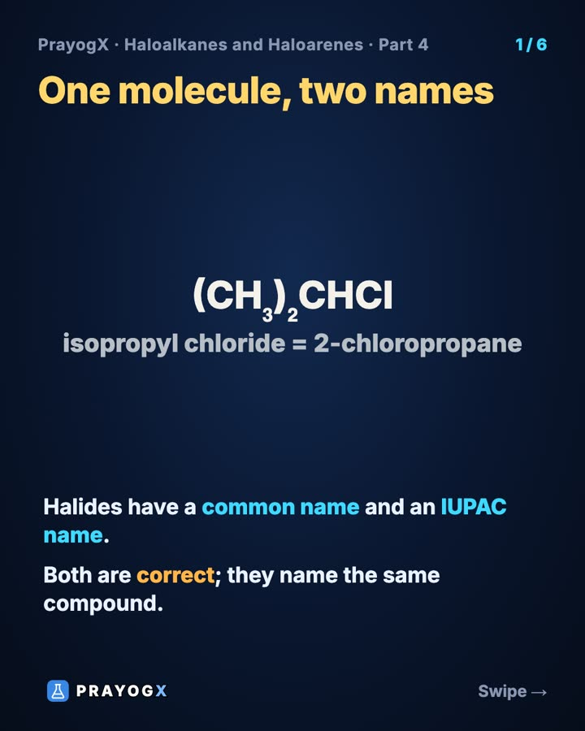
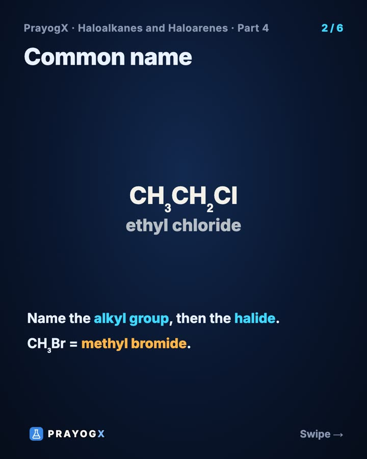
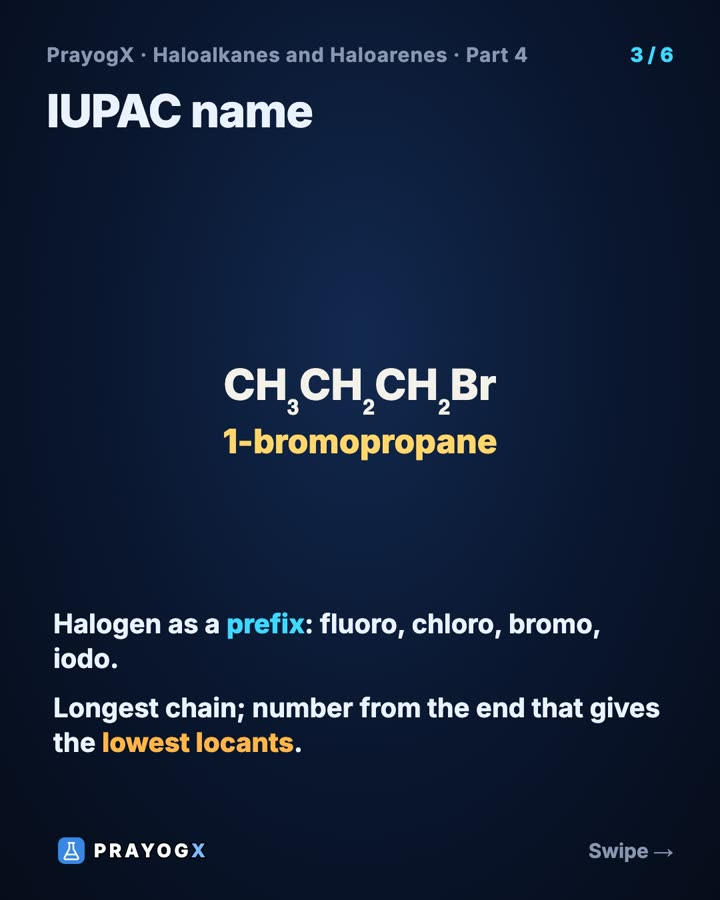
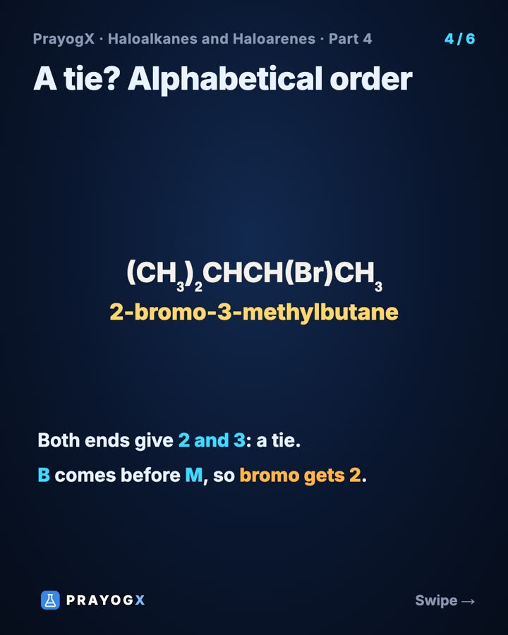
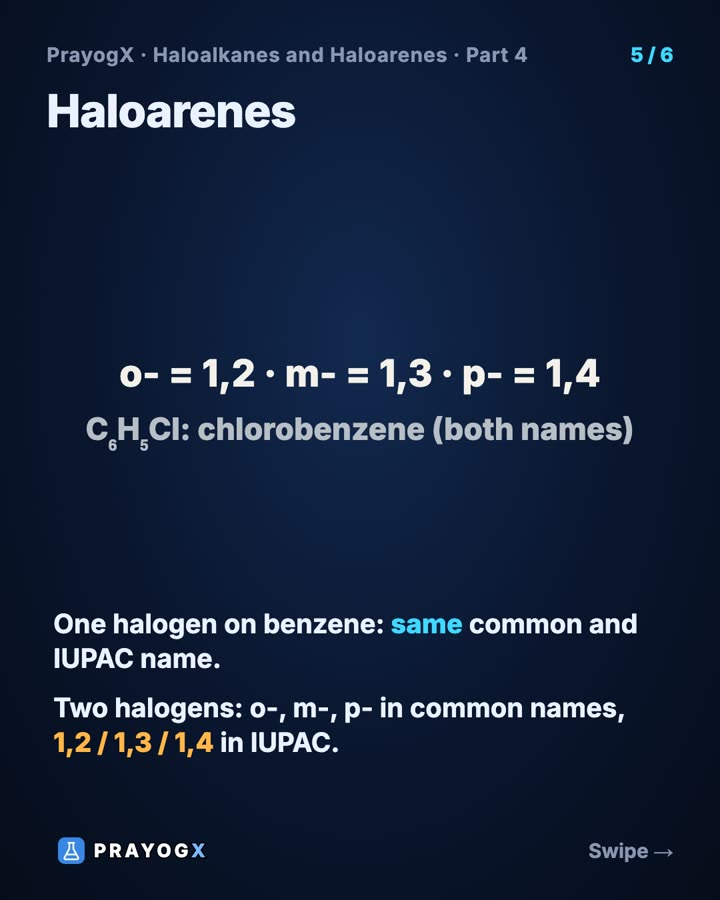
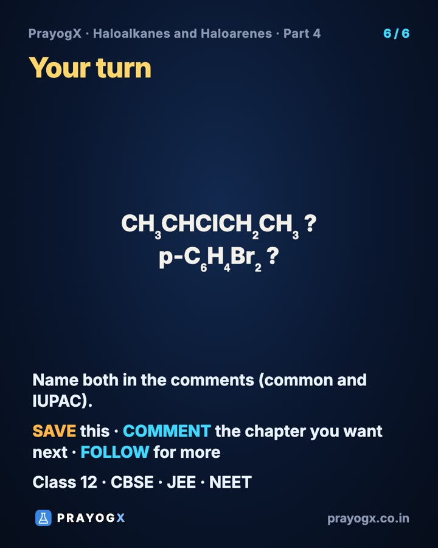

Chapter 6 · Chemistry
Naming Haloalkanes and Haloarenes: Common and IUPAC Names
Video not playing? YouTube
Every halide has two correct names. The common name is the alkyl group + halide (isopropyl chloride, ethyl chloride). The IUPAC name writes the halogen as a prefix (fluoro, chloro, bromo, iodo) on the longest chain, numbered from the end that gives the lowest locants; when both ends tie, alphabetical order decides (2-bromo-3-methylbutane). On benzene one halogen keeps the same name (chlorobenzene); two use o-, m-, p- in common names and 1,2 / 1,3 / 1,4 in IUPAC.
Download the short notesPDF, 200 KB · solved examples, practice set and answer key Download the memory cards
PDF, 651 KB · 6 cards: the whole topic at a glance, for quick revision Download the workbook
PDF, 183 KB · fill in the blanks, true/false, assertion-reason, MCQ, numericals, short answer, match the columns; detailed solutions at the end Up next in this chapter
 Name and Classify Haloalkanes: NCERT Questions SolvedThree NCERT exercise questions solved with one checklist: longest chain (look inside the branches), lowest locants, alphabetical order on a tie; and the class (1°, 2°, 3°) is decided only by the carbon that carries the halogen. CH₃CH₂C(CH₃)₂CH₂I is 1-iodo-2,2-dimethylbutane (1°), CH₃C(Cl)(C₂H₅)CH₂CH₃ is 3-chloro-3-methylpentane (3°), and CH₃CH(Cl)CH(Br)CH₃ is 2-bromo-3-chlorobutane.Chemistry
Name and Classify Haloalkanes: NCERT Questions SolvedThree NCERT exercise questions solved with one checklist: longest chain (look inside the branches), lowest locants, alphabetical order on a tie; and the class (1°, 2°, 3°) is decided only by the carbon that carries the halogen. CH₃CH₂C(CH₃)₂CH₂I is 1-iodo-2,2-dimethylbutane (1°), CH₃C(Cl)(C₂H₅)CH₂CH₃ is 3-chloro-3-methylpentane (3°), and CH₃CH(Cl)CH(Br)CH₃ is 2-bromo-3-chlorobutane.Chemistry
Key points
- Two correct names: (CH₃)₂CHCl is isopropyl chloride (common) and 2-chloropropane (IUPAC).
- Common name = alkyl group + halide: CH₃CH₂Cl ethyl chloride, CH₃Br methyl bromide.
- IUPAC: halogen as a prefix (fluoro, chloro, bromo, iodo); longest chain; number for the lowest locants: CH₃CH₂CH₂Br is 1-bromopropane, not 3-.
- Tie → alphabetical order: (CH₃)₂CHCH(Br)CH₃ gives {2,3} from both ends, so bromo gets 2: 2-bromo-3-methylbutane.
- Haloarenes: one X → same name (chlorobenzene); two X → o-, m-, p- = 1,2 / 1,3 / 1,4.
Common and IUPAC names side by side
| Structure | Common name | IUPAC name |
|---|---|---|
| CH₃CH₂Cl | ethyl chloride | chloroethane |
| CH₃CH₂CH₂Br | n-propyl bromide | 1-bromopropane |
| (CH₃)₂CHCl | isopropyl chloride | 2-chloropropane |
| CH₃CH₂CHClCH₃ | sec-butyl chloride | 2-chlorobutane |
| (CH₃)₃CBr | tert-butyl bromide | 2-bromo-2-methylpropane |
| (CH₃)₃CCH₂Cl | neopentyl chloride | 1-chloro-2,2-dimethylpropane |
| CH₂=CHCl | vinyl chloride | chloroethene |
| CH₂=CHCH₂Br | allyl bromide | 3-bromoprop-1-ene |
| CHCl₃ | chloroform | trichloromethane |
| CCl₄ | carbon tetrachloride | tetrachloromethane |
Dihalobenzenes
| Positions | Common | IUPAC |
|---|---|---|
| neighbouring carbons | o-dichlorobenzene | 1,2-dichlorobenzene |
| one carbon between | m-dichlorobenzene | 1,3-dichlorobenzene |
| opposite carbons | p-dichlorobenzene | 1,4-dichlorobenzene |
Common mistakes
- Numbering from the wrong end (3-bromopropane ✗, 1-bromopropane ✓).
- Using alphabetical order before the lowest-locant rule: it only breaks a tie.
- Writing a common name as the IUPAC name: ethyl bromide ✗, bromoethane ✓ (one word).
- Reading meta as 1,4: meta is 1,3, para is 1,4.
Memory cards
Swipe through the 6 cards to revise this topic in a minute.






PDF, 651 KB · 6 cards: the whole topic at a glance, for quick revision
Quick quiz
10 questions. Choose an answer for each, then submit to see your score and the explanations.
More from Haloalkanes and Haloarenes
 Alkyl, Vinyl, Allyl and Aryl Halides: Which Carbon Holds X?Alkyl, vinyl (vinylic), allyl (allylic) and aryl halides differ only in the carbon that holds the halogen. Alkyl: a saturated sp³ carbon (1°, 2°, 3° by the alkyl groups on it). Vinyl: X directly on a carbon of a C=C (sp²). Allyl: X on the sp³ carbon next to a C=C. Aryl: X directly on a carbon of an aromatic ring (sp²), e.g. chlorobenzene. Bonus: X on the sp³ CH₂ next to a benzene ring is a benzyl (benzylic) halide. Identify the carbon attached to X: that's the key.Chemistry
Alkyl, Vinyl, Allyl and Aryl Halides: Which Carbon Holds X?Alkyl, vinyl (vinylic), allyl (allylic) and aryl halides differ only in the carbon that holds the halogen. Alkyl: a saturated sp³ carbon (1°, 2°, 3° by the alkyl groups on it). Vinyl: X directly on a carbon of a C=C (sp²). Allyl: X on the sp³ carbon next to a C=C. Aryl: X directly on a carbon of an aromatic ring (sp²), e.g. chlorobenzene. Bonus: X on the sp³ CH₂ next to a benzene ring is a benzyl (benzylic) halide. Identify the carbon attached to X: that's the key.Chemistry One Atom, Many Lives: Haloalkanes and HaloarenesIn 1847 James Simpson found that chloroform, CHCl₃, could put people to sleep for surgery. Replace a hydrogen of a hydrocarbon with a halogen and you get a haloalkane (halogen on an sp³ alkyl carbon) or a haloarene (halogen on an sp² ring carbon). They are everywhere: chloramphenicol for typhoid, thyroxine with four iodine atoms, chloroquine for malaria, halothane for anaesthesia. The polar C–X bond, with a δ+ carbon, is why they react, and it opens the whole chapter.Chemistry · 9:16 + 16:9
One Atom, Many Lives: Haloalkanes and HaloarenesIn 1847 James Simpson found that chloroform, CHCl₃, could put people to sleep for surgery. Replace a hydrogen of a hydrocarbon with a halogen and you get a haloalkane (halogen on an sp³ alkyl carbon) or a haloarene (halogen on an sp² ring carbon). They are everywhere: chloramphenicol for typhoid, thyroxine with four iodine atoms, chloroquine for malaria, halothane for anaesthesia. The polar C–X bond, with a δ+ carbon, is why they react, and it opens the whole chapter.Chemistry · 9:16 + 16:9 Count the Halogens: Mono, Di, Poly, Gem and VicHalogen compounds are classified first by the number of halogen atoms: one is mono, two is di, three or more is poly (tri-, tetra-). Count the halogens, not the carbons: chloroform, CHCl₃, has one carbon but three chlorines, so it is a polyhalogen compound. Dihalides split by position: both halogens on the same carbon is a gem-dihalide (alkylidene halide, e.g. ethylidene chloride, 1,1-dichloroethane); on adjacent carbons a vic-dihalide (alkylene dihalide, e.g. ethylene dichloride, 1,2-dichloroethane).Chemistry
Count the Halogens: Mono, Di, Poly, Gem and VicHalogen compounds are classified first by the number of halogen atoms: one is mono, two is di, three or more is poly (tri-, tetra-). Count the halogens, not the carbons: chloroform, CHCl₃, has one carbon but three chlorines, so it is a polyhalogen compound. Dihalides split by position: both halogens on the same carbon is a gem-dihalide (alkylidene halide, e.g. ethylidene chloride, 1,1-dichloroethane); on adjacent carbons a vic-dihalide (alkylene dihalide, e.g. ethylene dichloride, 1,2-dichloroethane).Chemistry